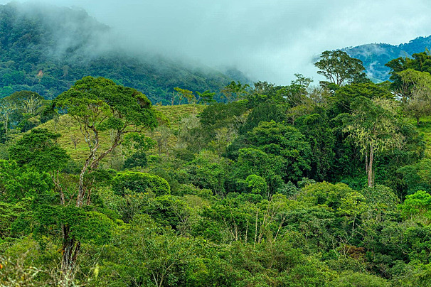

🌿 A Importância das Plantas em uma Cadeia Alimentar

As plantas desempenham um papel fundamental nas cadeias alimentares. Elas são chamadas de produtoras, porque conseguem produzir seu próprio alimento através da fotossíntese — processo em que utilizam a luz solar, o gás carbônico e a água para gerar energia.
✅ Papel das Plantas na Cadeia Alimentar

- Produtores Primários: As plantas são a base de quase todas as cadeias alimentares terrestres e aquáticas. Elas convertem a energia do sol em energia química, que alimenta os demais seres vivos.
- Fonte de Alimento: Servem de alimento para os herbívoros (consumidores primários). Indiretamente, sustentam também os carnívoros e onívoros, que se alimentam desses herbívoros.
- Equilíbrio dos Ecossistemas: Contribuem para o equilíbrio ambiental, fornecendo oxigênio, sombra, abrigo e proteção para diversas espécies. Sem plantas, a cadeia alimentar seria interrompida, prejudicando toda a vida no planeta.
- Ciclagem de Nutrientes: Ajudam a manter o solo fértil e participam do ciclo de nutrientes essenciais à vida.
🌎 Conclusão
As plantas são a base da vida nos ecossistemas. Elas sustentam toda a cadeia alimentar e garantem a sobrevivência dos seres vivos, incluindo os seres humanos. Proteger e preservar as plantas é essencial para manter o equilíbrio da natureza.